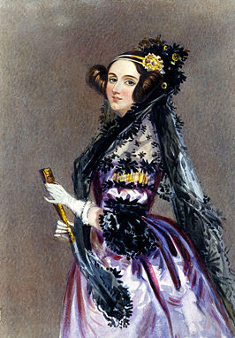

Dit is Ada: 
Augusta Ada Byron King , Lady Lovelace, geboren Augusta Ada Byron (Londen, 10 december 1815 – aldaar (Marylebone), 27 november 1852) was een Britse wiskundige. Zij is bekend om haar beschrijving van de "analytische machine", de vroege mechanische computer voor algemeen gebruik van Charles Babbage. Ze wordt nu gezien als de ontwerpster van het eerste computerprogramma, omdat ze "programma's" schreef om symbolen volgens vaste regels te manipuleren met een machine die Babbage op dat moment nog moest maken. Ze zag ook al in dat computers in staat zouden zijn meer dan enkel (zware) berekeningen te doen, terwijl anderen – waaronder Babbage zelf – slechts geïnteresseerd waren in de rekenkundige capaciteiten van een computer. Zo werd zij ook gezien als (een van) de allereerste vrouwelijke programmeur.